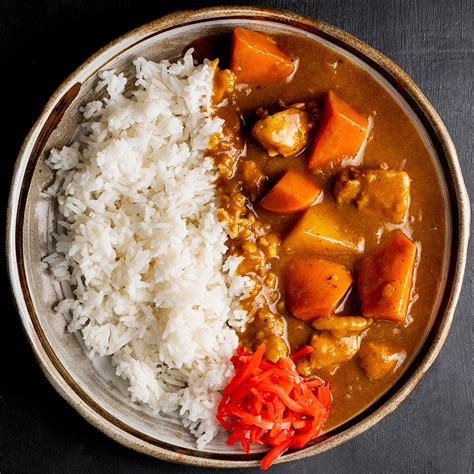

Home
Japanese Curry Rice

Description
Japanese curry rice is a beloved comfort food from Japan that combines a rich, mildly spicy curry sauce with tender chunks of meat, potatoes, carrots, and onions.
This dish is easy to customize based on your preference. Whether enjoyed at home or in a cozy Japanese curry house, curry rice is a true staple of Japanese home cooking that brings both comfort and flavor to the table.
Ingredients
- 1 lb meat (chicken thighs, pork, or beef), cut into bite-sized pieces
- 2 medium potatoes, peeled and diced
- 2 medium carrots, peeled and sliced
- 1 large onion, sliced
- 2 tablespoons olive oil
- 3 cups water
- 1 box Japanese curry roux (Golden Curry, Vermont Curry, or Java Curry)
- White rice
Steps
- Prepare the ingredients. Peel and chop the potatoes, carrots, and onion. Cut your choice of meat into bite-sized pieces.
- Saute the meat and vegetables. Heat 2 tablespoons of oil in a large pot over medium heat. Add the meat and cook until browned on all sides. Add the onions and saute until translucent, about 3-5 minutes. Then add the carrots and potatoes, and cook for another 5 minutes.
- Add liquid and simmer. Pour in 3 cups of water, enough to cover the ingredients. Bring to a boil, then reduce heat to low. Skim off any foam or fat that rises to the top. Cover and simmer for about 15-20 minutes, or until the vegetables are tender.
- Add the curry roux. Break the curry roux into blocks and stir them into the pot. Keep stirring gently until the roux dissolves completely and the sauce thickens. Simmer uncovered for another 10 minutes, stirring occasionally to prevent sticking.
- Serve. Spoon the curry over a bed of white rice. Enjoy!